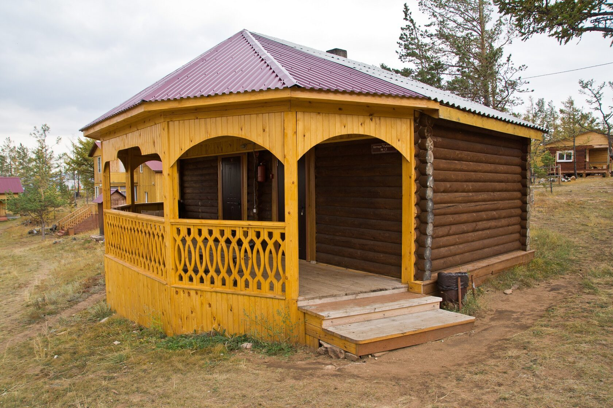
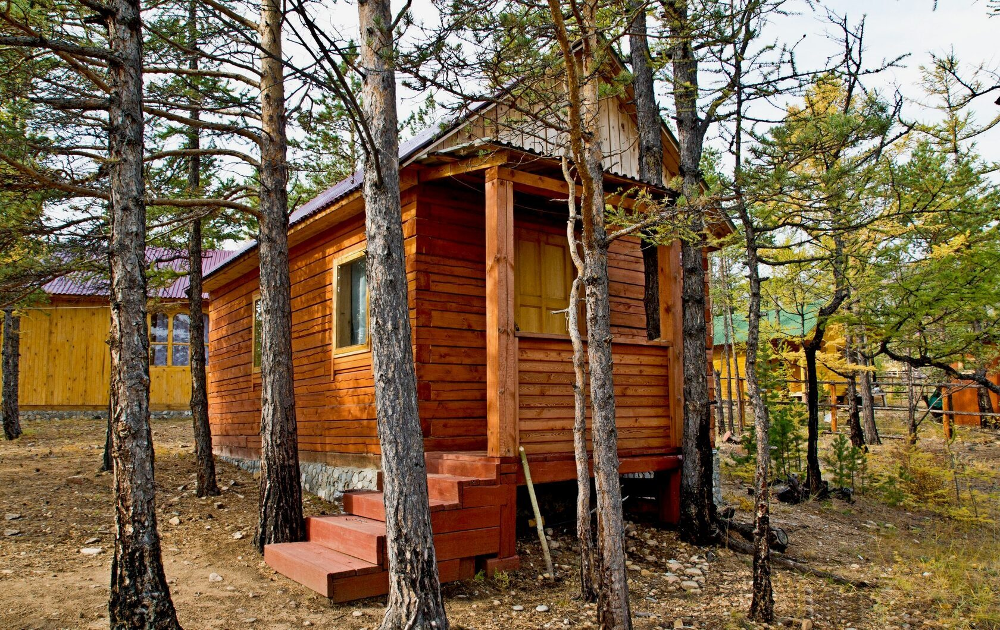

| Название |
Вид снаружи |
Сезонность |
Описание |
Стоимость проживания (руб./чел. в сутки) |
Скидки |
| Коттедж "Рыбацкий" №1 |
 |
Все сезоны |
Это отличный, полностью обновлённый, благоустроенный коттедж с кухней, где есть вся необходимая для приготовления посуда.
В коттедже имеется санузел, телевизор, холодильник.
У домика - красивая просторная большая веранда со столиком для отдыха. |
май - 01 июля — 2100
01 июля - 20 августа — 3000 руб.
21 августа - 1 октября — 2100 руб. |
- При размещении 2 взр. +1 ребенок дети до 10 лет размещаются бесплатно.
- При размещении 3-х человек ( дети старше 10 лет или взрослый) в одном номере за 3-го человека оплачивается 50% стоимости проживания
- При ином размещении детей с родителями: детям до 10 лет скидка на проживание 15%, с 11 до 14 лет -10%
|
| Коттедж "Рыбацкий" №3, №4 |
 |
Лето |
Это полублагоустроенный двухкомнатный домик, у каждого номера свой отдельный вход, в номере – холодная вода, санузел, без душа. В № 3 – печка, в № 4 – батарейное отопление. Рядом с домиком находится беседка с видом на Байкал. |
май - 01 июля — 1000 руб.
01 июля - 20 августа — 1200 руб.
21 августа - 1 октября — 1000 руб. |
- При размещении 2 взр. +1 ребенок дети до 10 лет размещаются бесплатно.
- При размещении 3-х человек ( дети старше 10 лет или взрослый) в одном номере за 3-го человека оплачивается 50% стоимости проживания
- При ином размещении детей с родителями: детям до 10 лет скидка на проживание 15%, с 11 до 14 лет -10%
|
| Коттедж "Русский" №1 |
 |
Лето |
Благоустроенный отдельно стоящий коттедж для активного отдыха на Байкал. Рассчитан на размещение 2-4 человека. В номере – горячее/холодное водоснабжение, душ, туалет; телевизор со спутниковым ТВ, холодильник, чайник; шкаф, журнальный столик, табуретки, 2 тумбочки. Вечером можно насладиться семейным отдыхом на небольшой веранде. Он находится в небольшом отдалении от центра базы в окружении хвойных деревьев. Рядом с ним – пикниковая площадка, беседка с барбекю. |
май - 01 июля — 1700
01 июля - 20 августа — 2800 руб.
21 августа - 1 октября — 2100 руб. |
- При размещении 2 взр. +1 ребенок дети до 10 лет размещаются бесплатно.
- При размещении 3-х человек ( дети старше 10 лет или взрослый) в одном номере за 3-го человека оплачивается 50% стоимости проживания
- При ином размещении детей с родителями: детям до 10 лет скидка на проживание 15%, с 11 до 14 лет -10%
|